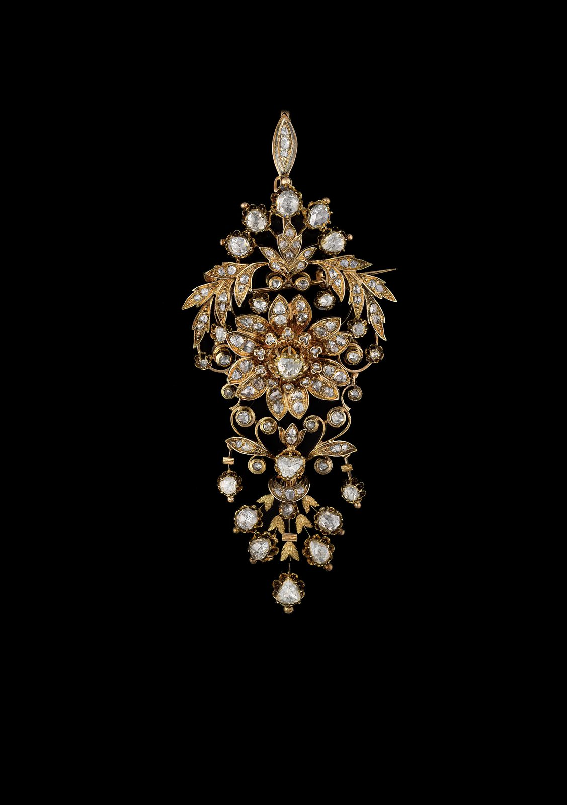

17th & 18th Century
18th-Century Rose-Cut Diamond Brooch
Antique 18k yellow gold brooch set with rose-cut diamonds. French work.
- Date & origin
- 18th century · French
- Era
- 17th & 18th Century · Before 1800
- Category
- Brooches
- Price
- Price on request
Condition report available on request · Insured, tracked worldwide shipping